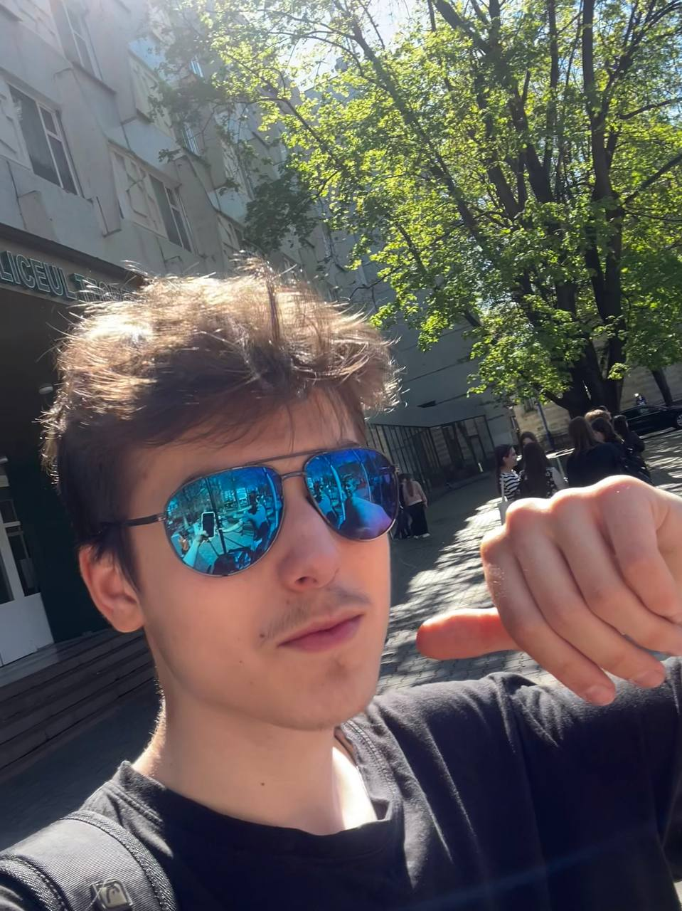

|
|
|

|
Surdu Diomid
Inginer
|
CONTACTE
Email: emailulmeureal@gmail.net
Numar de telefon:112
Locatie: Republica Moldova: Chisinau
|
Despre mine
Student dedicat ,cu experienta in mai multe domenii.Lucrez in echipa sau singur foarte eficient
De asemenea sunt foarte dedicat invatarii, muzicii si descoperirii de noi tehnologii. Tin sa
evidentiez ca am o comunicare asertiva si pot controla emotiile si stresul cu iscusinta.
De asemenea pot crea o atmosfera stimulanta si suportiva pentru lucratorii pe care ii coduc.
|
Aptitudini Profesionale
-
Servicii Vamale
-
Atentie Sporita
-
Lucru in echipa
-
Respect regulile
-
Inventiv
-
Creativ
-
IQ200
|
Educatie
Gimnaziu Liceul Teoretic Gheorghe Asachi (4 ani)Liceu la I.P.L.T. Gheorghe Asachi (3 ani)Universitatea de Stat a Republicii Moldova in
Inginerie Mecanica
|
Limbi vorbite:
RomanaMoldoveneascaRusaUcraineascaGermanaItalianaSpaniolaEngleza
|
Hobby-uri
InotAlergatVoleiBasketBadmintonCiclismCalatoritEscalada
|
Experienta
-
Profesor
-
Cercetator
-
Muzician
-
Vanzator
|
Istoria Angajarilor:
Linella CasierHamal la Piata Centrala EuropeanaLiceul Teoretic Gheorghe Asachi Profesor de Limba RomanaNasa Astronaut(200 zile pe ISS)SpaceX cercetator pe planeta Mars
|
|